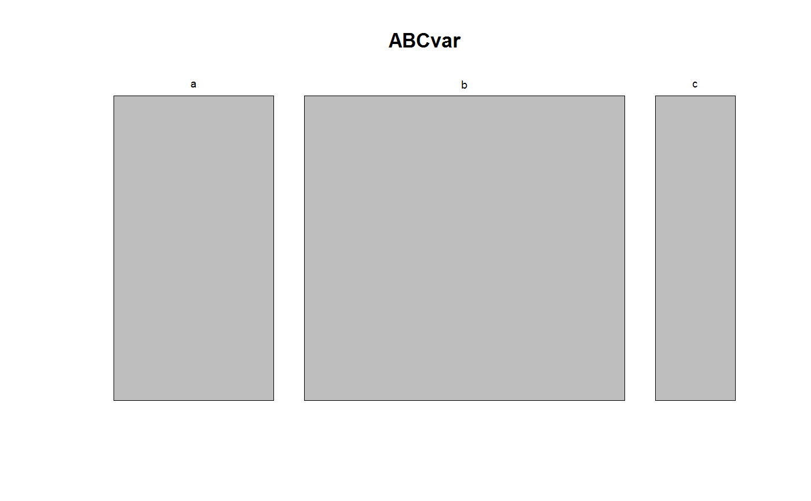

Convert a function, f, into an S3
visualFunction object. This adds f to the
overview list returned by an allVisualFunctions()
call.
visualFunction(f, description, classes = NULL)
| f | A function. See details and examples below for the exact requirements of this function. |
|---|---|
| description | A character string describing the visualization
returned by |
| classes | The classes for which |
A function of class visualFunction which has to attributes,
namely classes and description.
visualFunction represents the functions used in
visualize and makeDataReport for plotting the
distributions of the variables in a dataset.
An example of defining a new visualFunction is given below.
Note that the minimal requirements for such a function (in order for it to be
compatible with visualize() and makeDataReport()) is the following
input/output-structure: It must input exactly the following three arguments,
namely v (a vector variable), vnam (a character string with
the name of the variable) and doEval (a logical). The last argument
is supposed to control whether the function produces a plot in the
graphic device (if doEval = TRUE) or instead returns a character
string including R code for generating such a plot. In the latter
setting, the code must be stand-alone, that is, it cannot depend on object
available in an environment. In practice, this will typically imply that
the data variable is included in the code snip.
It is not strictly necessary to implement the doEval = TRUE setting
for the visualFunction to be compatible with makeDataReport,
but we recommend doing it anyway such that the function can also be used
interactively.
Note that all available visualFunctions are listed by the call
allVisualFunctions() and we recommed looking into these function,
if more knowledge about visualFunctions is required.
allVisualFunctions, visualize,
makeDataReport
#Defining a new visualFunction: mosaicVisual <- function(v, vnam, doEval) { thisCall <- call("mosaicplot", table(v), main = vnam, xlab = "") if (doEval) { return(eval(thisCall)) } else return(deparse(thisCall)) } mosaicVisual <- visualFunction(mosaicVisual, description = "Mosaicplots from graphics", classes = allClasses())#> Error in get(fName): object 'mosaicVisual' not found#mosaicVisual is now included in a allVisualFunctions() call: allVisualFunctions()#> #> ------------------------------------------------------------------------------ #> name description classes #> ---------------- ------------------------------- ----------------------------- #> basicVisual Histograms and barplots using character, Date, factor, #> graphics integer, labelled, logical, #> numeric #> #> standardVisual Histograms and barplots using character, Date, factor, #> ggplot2 integer, labelled, logical, #> numeric #> ------------------------------------------------------------------------------ #>#Create a mosaic plot: ABCvar <- c(rep("a", 10), rep("b", 20), rep("c", 5)) mosaicVisual(ABCvar, "ABCvar", TRUE)#Create a character string with the code for a mosaic plot: mosaicVisual(ABCvar, "ABCVar", FALSE)#> [1] "mosaicplot(structure(c(10L, 20L, 5L), .Dim = 3L, .Dimnames = structure(list(" #> [2] " v = c(\"a\", \"b\", \"c\")), .Names = \"v\"), class = \"table\"), main = \"ABCVar\", " #> [3] " xlab = \"\")"#> [1] "mosaicVisual"#> [1] "mosaicVisual"